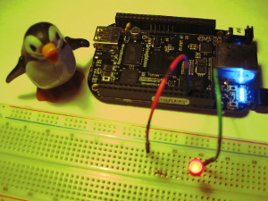

Blinking an LED is the 'Hello World' of hardware. BeagleBone Black's LEDs can be controlled by the user and the device can be connected with external LEDs.
Built-in LEDs
BBB has 4 onboard LEDs that serve as indicators for various bits of the hardware and their interfaces can be accessed under /sys/class/leds ...
$ ls /sys/class/leds/
beaglebone:green:usr0 beaglebone:green:usr1 beaglebone:green:usr2 beaglebone:green:usr3
The blinking 'heartbeat' LED that indicates BBB is alive and well is beaglebone:green:usr0 ...
## 'trigger' determines what event is monitored
$ ls /sys/class/leds/beaglebone\:green\:usr0/
brightness device max_brightness power subsystem trigger uevent
$ cat /sys/class/leds/beaglebone\:green\:usr0/trigger
none nand-disk mmc0 mmc1 timer oneshot [heartbeat] backlight gpio cpu0 default-on transient
## stop the heart
# echo none > /sys/class/leds/beaglebone\:green\:usr0/trigger
## turn LED on (no blinking)
# echo none > /sys/class/leds/beaglebone\:green\:usr0/trigger
# echo 1 > /sys/class/leds/beaglebone\:green\:usr0/brightness
## strobe LED (get BeagleBone's heart racing at 20 'beats' per second)
# echo timer > /sys/class/leds/beaglebone\:green\:usr0/trigger
# echo 25 > /sys/class/leds/beaglebone\:green\:usr0/delay_off
# echo 25 > /sys/class/leds/beaglebone\:green\:usr0/delay_on
## *whew* ... restore default heartbeat
# echo heartbeat > /sys/class/leds/beaglebone\:green\:usr0/trigger
How to Use the GPIO Pins
BeagleBone Black has 65 General Purpose Input/Output (GPIO) pins distributed on the board's P8 and P9 headers. These software-controlled pins can be configured to work with external hardware and are accessed through the Linux kernel's GPIO interfaces under /sys/class/gpio ...
$ ls /sys/class/gpio/
export gpiochip0 gpiochip32 gpiochip64 gpiochip96 unexport
What can be confusing at first glance is that a pin's number on the BeagleBone header and its GPIO number are different. Each gpiochipX controls 32 pins and is used to calculate the GPIO address of a pin (some of the GPIO pins are dedicated to BBB's onboard hardware and unavailable by default).
Example: Pin P8_12 is controlled by gpio1[12] which translates as pin 12 on the second controller (starting from zero) ... (32 * 1) + 12 = 44. To add a pin for use I map GPIO_44 into the filesystem by echoing its pin number to the GPIO export file ...
# echo 44 > /sys/class/gpio/export
# ls /sys/class/gpio/
export gpio44 gpiochip0 gpiochip32 gpiochip64 gpiochip96 unexport
# ls /sys/class/gpio/gpio44/
active_low direction edge power subsystem uevent value
... and a new gpio44 directory is created and the pin is available for work.
Breadboard Blinking LED
For my external LED experiment I use:
- red LED
- breadboard
- 470 ohm resistor
- 2 jumper wires
- penguin (optional)
Header pins P8_1 and P8_2 are both GND. Connect P8_2 to the LED cathode and our newly-enabled GPIO_44 pin (P8_12) to the LED anode.
To turn the LED on and off I input settings HIGH and LOW ...
## ON
# echo high > /sys/class/gpio/gpio44/direction
## OFF
# echo low > /sys/class/gpio/gpio44/direction
I created a tiny shell script to blink the LED ...
#!/bin/sh
# Blink an LED on breadboard
PIN="44" # P8_12 is gpio1[12] = (32 * 1) + 12 = 44
GPIOPIN="/sys/class/gpio/gpio$PIN"
if [ -d "$GPIOPIN" ]; then
echo "Blinking LED connected to Pin $PIN ..."
else
echo $PIN > /sys/class/gpio/export
echo "Blinking LED connected to Pin $PIN ..."
sleep 1
fi
while true; do
echo high > $GPIOPIN/direction
sleep 2
echo low > $GPIOPIN/direction
sleep 2
done
... and CTRL-C to kill the script.
To remove a GPIO pin from use simply unexport the pin ...
# echo 44 > /sys/class/gpio/unexport
Helpful Resources
- Linux Kernel GPIO Interfaces
- Adafruit's Blinking an LED with BBB tutorial using Python
- Derek Molloy's tables for the P8 and P9 header pins